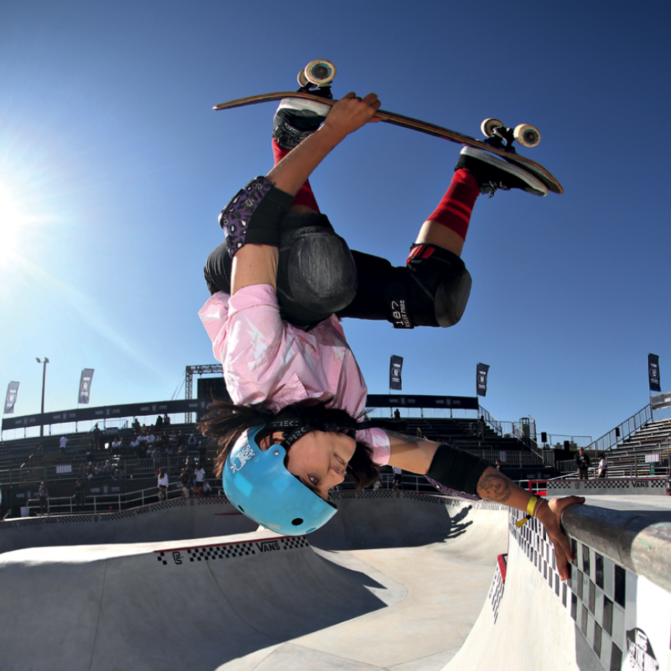

O Circuito Brasileiro de Skate tem categorias femininas nas duas modalidades olímpicas, park e street, e as competições rendem pontos para as atletas, que podem vir a fazer parte da seleção brasileira em Tóquio.
“Antes, os organizadores de algumas competições só colocavam as meninas por pressão nossa. Isso mudou quando o skate virou esporte olímpico”, defende Karen Jonz, 35, tetracampeã mundial de vertical e a primeira brasileira a conquistar uma medalha de ouro nos X Games, em 2008. Leticia Bufoni, 25, que já levou três medalhas de ouro nos X Games, no street, concorda e completa: “Outro ponto importante é o fato de o Brasil ter uma geração muito boa e competitiva, tanto no feminino quanto no masculino, o que ajuda o esporte no país
Uma foto viralizou na internet por conta da discrepância de valores entre as premiações de uma competição. A imagem mostrava Yndiara e o skatista Pedro Barros, vencedores do Oi Skate Jam, realizado em Itajaí (SC), segurando cheques com seus prêmios: ele com R$ 17 mil e ela com R$ 5 mil. Yndi ficou surpresa com a repercussão: “Isso mostra o quanto as mulheres estão com força e vontade pra defenderem a equidade”, disse à Tpm, na época. Já a organização do evento declarou em nota que considerou a “participação qualitativa e quantitativa de skatistas profissionais” e que, por essa razão, teria julgado adequado oferecer um prêmio menor às mulheres.
Karen lembra que quando começou a competir, há 16 anos, a categoria feminina costumava ser deixada em segundo plano: “Chegava num campeonato às 7 da manhã e os organizadores diziam que o feminino tinha sido cancelado porque não ia dar tempo. Quando a gente participava, era maltratada, não tínhamos premiação ou recebíamos os piores prêmios”. Leticia reforça: “Muitas vezes tive que competir contra homens, pois não existiam campeonatos femininos e ainda por cima não pagavam nada”.
Impressiona a quantidade consistente de ótimas atletas, como a catarinense Yndiara Asp, 21 anos, e Dora Varella, 17 anos, que muito provavelmente representarão o Brasil nos Jogos de Tóquio, em 2020, nos quais o skate estreia como modalidade. Porém o boom feminino vai além. Em diversas regiões do país, há grupos de meninas descendo corrimões, pulando bancos de praças e encarando bowls íngremes – por pura diversão. A cena se completa em todos os aspectos do lifestyle desse esporte. Jovens fotógrafas vêm registrando manobras e outros momentos das amigas skatistas. Temos no Brasil marcas de roupas e equipamentos voltadas 100% para elas, como a Mary Jane. Criada em 1999, a empresa só faz tênis de skate femininos. Em 2012, lançou o primeiro modelo assinado por uma brasileira, da pioneira Karen Jonz. Em 2013, a Qix também lançou sua marca, Missy, para investir nesse público.